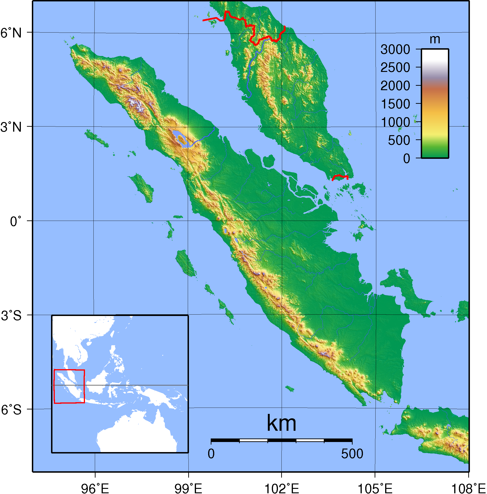
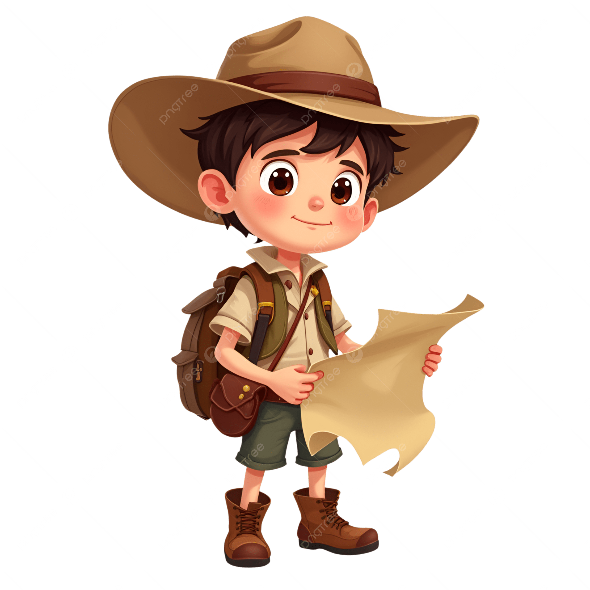

Ayo klik titik merah untuk belajar! 🎉


👆 Klik titik merah di peta untuk belajar tentang provinsi di Sumatra.
📖 Bacalah materi dengan baik terlebih dahulu.
Setelah itu, coba jawab quiz di bawah ini ya!